UX-Design - The Digital Commute Project
Case Study:
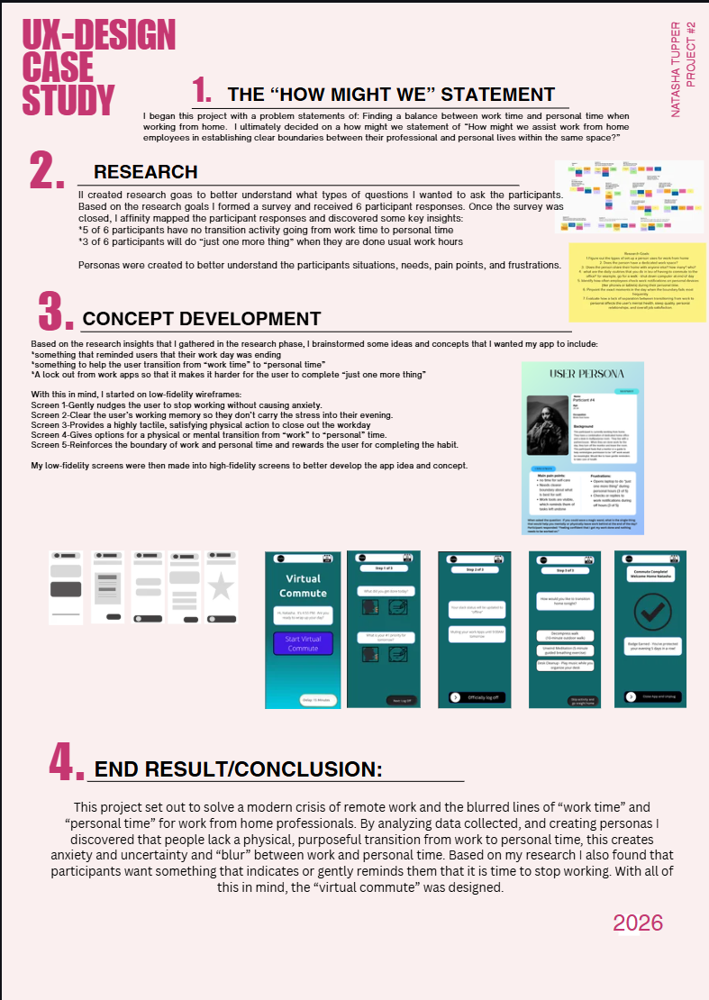
The Process:
I started with a problem statement of: Full time work from home professionals struggle to disconnect from work at the end of the day due to the physical blurring of personal and professional spaces. This results in unintended overworking, high rates of chronic burnout, and a measurable drop in long term mental well being. I came up with a how might we statement of “How might we assist work from home employees in establishing clear boundaries between their professional and personal lives within the same space?”
I brainstormed some research goals that I thought would help get me closer to discovering ways to help remote professionals when separating "work life" from "personal life." I came up with survey questions and then conducted the survey, which had 6 respondants. I affinity mapped their responses and created a persona's based on the information gathered.
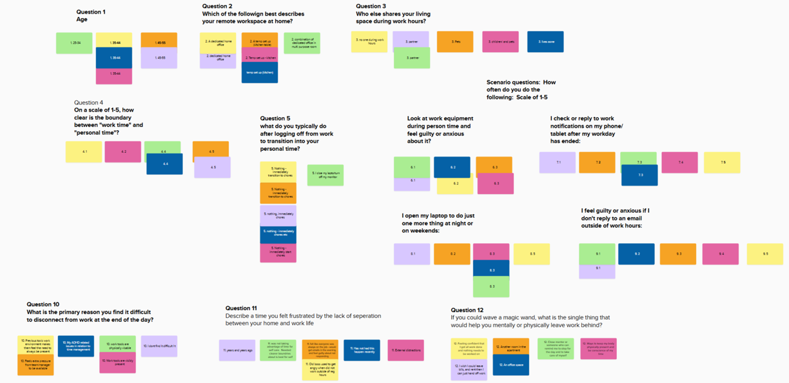
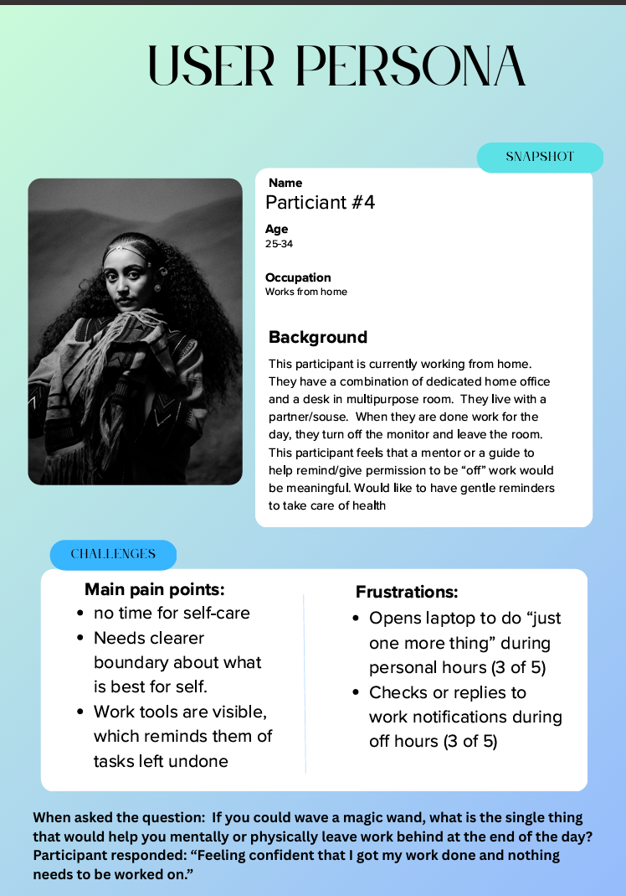
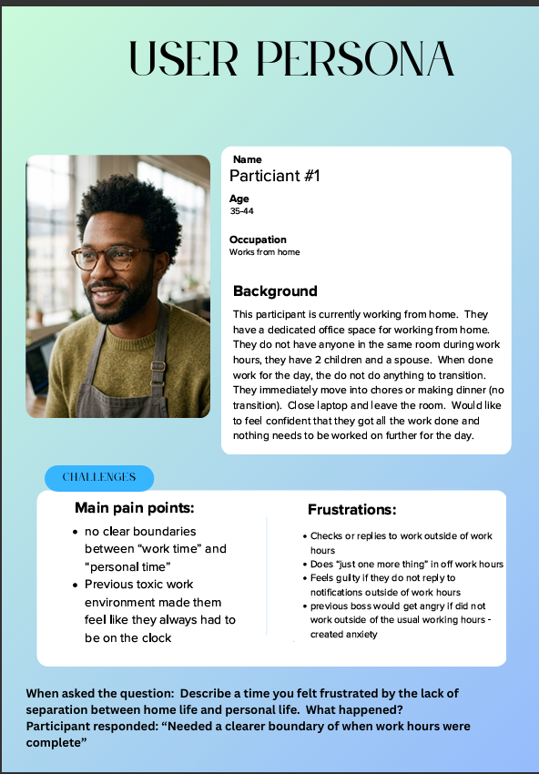
After the responses were mapped and categorized into similar responses, I discovered some key insights, which are: People lack a physical, purposeful transition from work to personal time, which created anxiety, uncertainty and "blur" between work and personal time. Based on the research I also found that participants want something that indicates or gently reminds them that it is time to stop working.
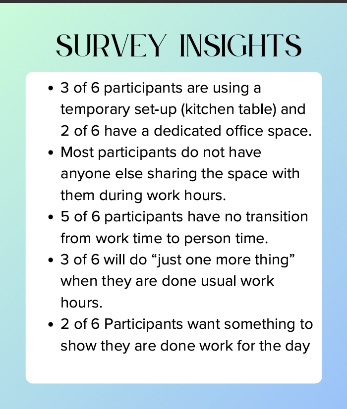
The Concept:
Once I had a vision in mind and clear understanding of the pain points, I created low-fidelity wireframes to map out my ideas. Once I was satisfied, I turned those into high-fidelity wireframes.
- Screen 1 - Gently nudges the user to stop working without causing anxiety.
- Screen 2 - Clear the user's working memory so they don't carry the stress into their evening.
- Screen 3 - Provides a highly tactile, satisfying physical action to close out the workday.
- Screen 4 - Gives options for a physical or mental transition from “work” to “personal” time.
- Screen 5 - Reinforces the boundary of work and personal time and rewards the user for completing the habit.
Low-Fidelity Wireframes
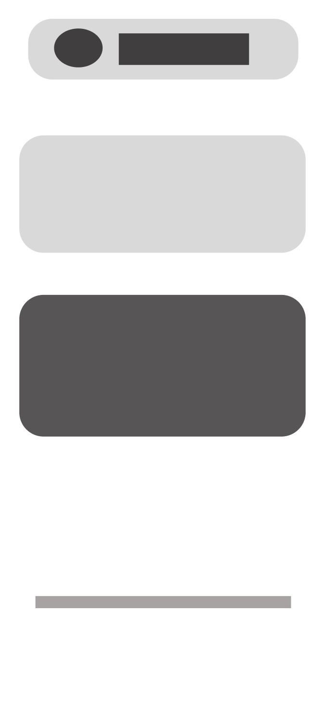
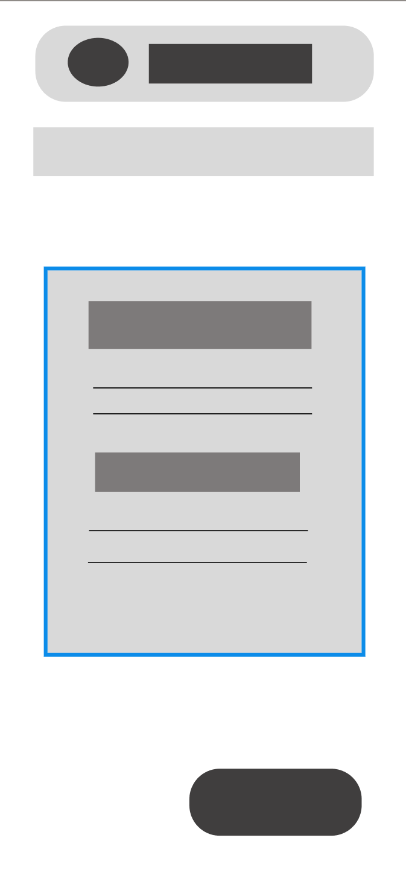
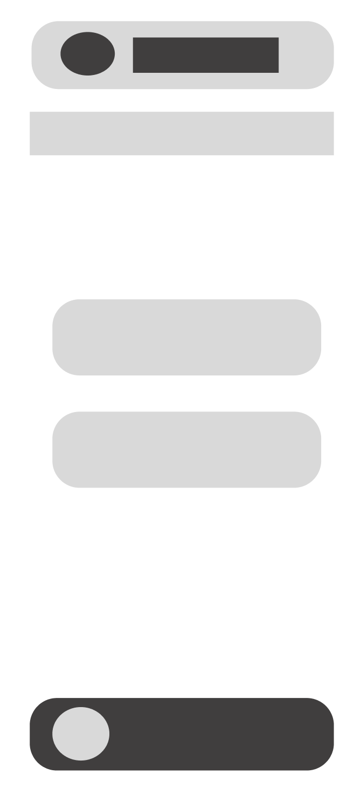
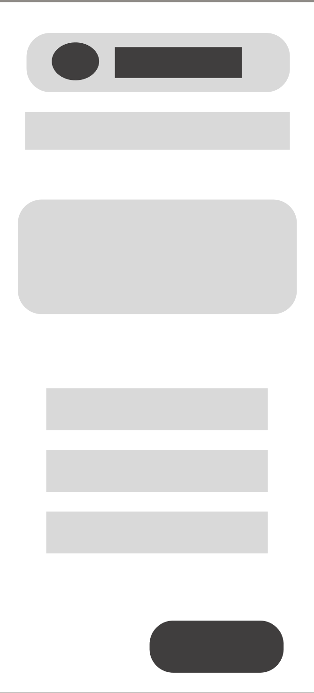
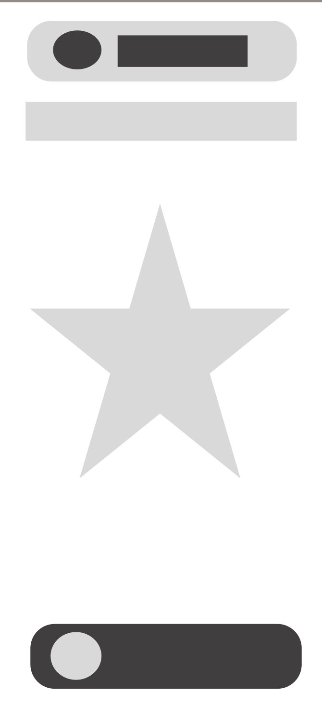
High-Fidelity Wireframes


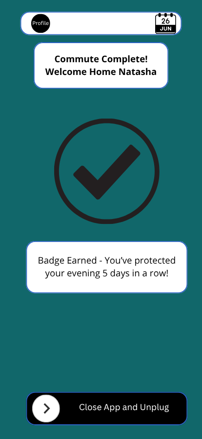
The End Result:
I developed the idea for an app called "The Digital Commute" The Digital Commute is an app that helps the user disconnect at the end of their work day. It allows them to catalogue their achievements for the day and set goals for the next day. It also provides an opportunity for transition from "work time" to "personal time"